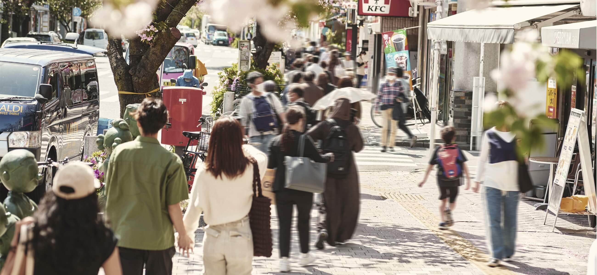

営業時間／10:00～18:00
（火・水曜定休(祝日除く)、年末年始は休業）

LocationSAKURASHINMACHI ロケーションSAKURASHINMACHI
image photo歴史と自然に彩られる
風情が香る街、桜新町。
賑やかな駅前を過ぎて、
閑静な住宅街へ。
季節や時間の移ろい、
自然の彩りを感じながら、
快適な都市生活を享受できる桜新町。
この街と生き、
ともに成長する喜びを。
image photo
image photo
桜神宮（約600m）

「桜新町」駅前北口
（約720m）
賑わい
行き交う人々に
街の活気を感じる。
（約720m）
砂の岬（約900m）
駅前通りを歩けば
多彩なショップが集う
魅力あふれる生活環境。
駅前には多彩な店舗が揃う
「桜新町商店街」
（約870m）があり、
普段使いのスーパーや
ドラッグストア、
飲食店などの
ショップが集まり、
都市生活の利便性を支えます。
カフェ ラ・ボエム
桜新町（約820m）
桜新町（約820m）
桜新町商店街（約870m）
人気のカフェ、
グルメが集積する桜新町

セキハナレ
[日本料理]
約970m
彩り
春は桜、夏は緑、
季節の移ろいが美しい。
image photo
桜神宮（約600m）
落ち着いた
風情を感じる日常。
桜新町の名にある通り
「駅前通り」は
八重桜の並木が続き、
春には桜で彩られます。
駅近くには
「桜神宮」（約600m）があり、
早咲きの河津桜が見られます。
Topics トピックス
提供写真
桜新町さくらまつり
毎年4月に開催される
桜新町の風物詩。
満開の桜に彩られた駅前通りが歩行者天国となります。
そこでは露店が立ち並び、
中央にステージが設置され
多くの人で賑わいます。
※「桜新町さくらまつり」の開催内容は変更・中止となる場合があります。
閑静
文化や歴史が香る
豊かな街並み。
中央図書館プラネタリウム（約300m）
図書館や美術館、
文化施設が点在する
閑静な住宅街。
「世田谷区立中央図書館」
（約300m）や
「世田谷区立郷土資料館」
（約720m）などが
あり教育や文化、感性が育まれる
閑静な街並み。
image photo
保育園夢未来桜新町園（約380m）
※「弦巻保育園」（徒歩3分）、「保育園夢未来桜新町園」（徒歩5分）、「ねいろ保育園」（徒歩7分）、「世田谷いちい保育園南ウィング」（徒歩8分）、「世田谷いちい保育園北ウィング」（徒歩8分）、「ぴっころ保育園」（徒歩8分）、「さくら幼稚園」（徒歩8分）、「こもれび保育園桜新町園」（徒歩8分）、「さくら幼稚園」（徒歩8分）、「スマイルキッズ桜新町保育園」（徒歩9分）、「東弦巻保育園」（徒歩9分）、「西弦巻保育園」（徒歩9分）、「ベネッセ桜新町保育園」（徒歩10分）
世田谷区立松丘小学校（約400m）
子育てに優しい
教育環境
子育て支援に積極的な
世田谷区では教育環境も充実。
「弦巻保育園」
（約170m）をはじめ、
徒歩10分圏内に13の
幼稚園や保育園※があり、
「松丘小学校」（約400m）、
「弦巻中学校」（約370m）
など、便利な立地環境です。
※「弦巻保育園」（徒歩3分）、「保育園夢未来桜新町園」（徒歩5分）、「ねいろ保育園」（徒歩7分）、「世田谷いちい保育園南ウィング」（徒歩8分）、「世田谷いちい保育園北ウィング」（徒歩8分）、「ぴっころ保育園」（徒歩8分）、「さくら幼稚園」（徒歩8分）、「こもれび保育園桜新町園」（徒歩8分）、「さくら幼稚園」（徒歩8分）、「スマイルキッズ桜新町保育園」（徒歩9分）、「東弦巻保育園」（徒歩9分）、「西弦巻保育園」（徒歩9分）、「ベネッセ桜新町保育園」（徒歩10分）
用途地域概念図
住みやすい環境に
配慮された
良質なエリア
現地は「第一種中高層住居専用地域」に位置し、周辺のほとんどが住居専用地域に指定されています。
住環境に影響を及ぼす建物の建設が制限されているため、良好な住環境が守られます。
第一種中高層住居専用地域
第一種中高層住居専用地域とは、マンションやアパートなどを中心とした中高層住宅のための地域で、遊戯施設や娯楽施設、大規模商業施設、工場などの建設が制限されています。
※掲載の用途地域概念図は一部道路・施設等を抜粋して表記しています。また世田谷区の用途地域図を基に引用したものです。（2024年4月現在）
※用途地域・周辺環境は将来変わる場合があります。
Life Information ライフインフォメーション
※掲載の地図は、一部道路・施設などを抜粋して表記しています。
【商業施設】
-
1
ナチュラルローソン
世田谷弦巻三丁目 約270m -
2
ファミリーマート
世田谷教育会館前店 約280m - 3 サミットストア弦巻通り店 約400m
- 4 スギ薬局/弦巻店 約410m
- 5 ローソン世田谷桜新町二丁目 約560m
- 6 セブンイレブン/世田谷新町3丁目 約600m
- 7 まいばすけっと/世田谷上町店 約620m
- 8 ウェルパーク桜新町店 約650m
- 9 ピーコックストア/桜新町店 約690m
- 10 桜新町商店街 約870m
- 11 ライフ/桜新町店 約950m
- 12 成城石井/桜新町店 約960m
【教育施設】
- 1 弦巻保育園 約170m
- 2 世田谷区立弦巻中学校【通学校】 約370m
- 3 サ保育園夢未来桜新町園 約380m
- 4 世田谷区立松丘小学校【通学校】 約400m
- 5 ねいろ保育園 約500m
【公共・文化・金融機関】
- 1 弦巻神社 約160m
-
2
中央図書館
中央図書館プラネタリウム
教育会館 約300m - 3 世田谷弦巻郵便局 約360m
- 4 芝信用金庫/桜新町支店 約610m
- 5 桜神宮 約600m
【医療機関】
- 1 弦巻通り まりあ歯科 約210m
- 2 樺クリニック 約410m
- 3 つるまき皮膚科 約420m
- 4 くろかわ小児科内科 約420m
-
5
医療法人社団さくら会
世田谷中央病院 約820m
【公園・スポーツ】
- 1 弦巻どんぐり山公園 約110m
- 2 弦巻三丁目東公園 約190m
- 3 弦巻三丁目公園 約240m
- 4 chocoZAP 桜新町 約300m
-
5
DIVAスポーツクラブ
DIVAスポーツクラブ/
KIDSスクール 約510m - 5 世田谷新町公園 約560m
※距離表示については地図上の概測距離を、徒歩分数表示については80ｍを1分として算出し、端数を切り上げたものです。
※掲載の写真は2024年5月撮影。
※掲載の情報は2024年3月現在のものです。
※店舗・施設の内容等は将来変わる場合があります。
※掲載の写真は2024年5月撮影。
※掲載の情報は2024年3月現在のものです。
※店舗・施設の内容等は将来変わる場合があります。